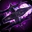
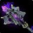
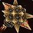
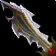

Halberd of Desolation
Halberd of DesolationHalberd of Desolation365 to 548 damage, speed 3.5, 51 agility, 57 stamina, 100 attack power, 30 hit rating (1.90%)Drops from High Warlord Naj'entus, Black Temple
365 to 548 damage, speed 3.5, 51 agility, 57 stamina, 100 attack power,
30 hit rating (1.90%)
Drops from High Warlord Naj'entus, Black Temple
What influencers say
Sarthe
Sarthe · 57:45
77k views
Puts it on Hunter
Sarthe says there is no real choice on this polearm, it goes to hunters,
and a melee weaving hunter should take it the moment it drops.
Showing all 4 spec cards.
No specs are selected, so no cards are showing. Use Show every spec to bring all of them back.
Arms Warrior
Prioritynot yet decided
Constraints
Special-attack hit cap9%special
attacks
Improved Faerie Fire-3%assumed
Gear needs6%
The Precision talent sits in the Fury tree, which this build does not
reach.
Entry set5.1%short
by 0.8%
Tier set, Tier 6 head and shoulder and
chest and hands3.9%short by 2.1%
Closed by 4 hit gems against 8 sockets in the set.
Onslaught Gauntlets 87.78 EPV against Grips of Silent Justice 101.88
from Shade of Akama, and the entry set holds two Tier 5 pieces, at the
head and the chest, so the head token costs the Destroyer two-piece and
not the four-piece; this set holds four Tier 6 pieces, at the head, the
shoulder, the chest and the hands.
White swings stop critting at 69.5%, measured at the special-attack hit
cap.
Nothing rostered reaches it this phase, so crit stays linear all tier.
No haste threshold to protect.
Delta
Halberd of DesolationHalberd of Desolation365 to 548 damage, speed 3.5, 51 agility, 57
stamina, 100 attack power, 30 hit rating (1.90%)Drops from High Warlord Naj'entus, Black
Temple in Arms Warrior
terms EPV
1273.98
| Stat | Over best weapon, Hyjal Summit Cataclysm's EdgeCataclysm's Edge386 to 580 damage, speed 3.5, 75 strength, 49 stamina, 335 armor penetrationDrops from Archimonde, Mount Hyjal EPV 1377.64 | Over Season 3
arena, Season 3
 Vengeful Gladiator's BonegrinderVengeful Gladiator's Bonegrinder386 to 580 damage, speed 3.6, 46 strength, 62 stamina, 15 hit rating (0.95%), 46 crit rating (2.08%), 98 armor penetration, 33 resilience EPV 1324.06 |
Over second best, Black Temple Soul CleaverSoul Cleaver386 to 579 damage, speed 3.7, 65 strength, 63 stamina, 315 armor penetrationDrops from Teron Gorefiend, Black Temple EPV 1295.62 | Over third best, Tempest Keep Twinblade of the PhoenixTwinblade of the Phoenix375 to 564 damage, speed 3.6, 53 stamina, 110 attack power, 108 ranged attack power, 37 crit rating (1.68%)Sockets red, yellow, blue · Socket bonus 8 attack power, 8 ranged attack powerDrops from Kael'thas Sunstrider, Tempest Keep EPV 1287.64 | Over carried into the tier, Tempest Keep Twinblade of the PhoenixTwinblade of the Phoenix375 to 564 damage, speed 3.6, 53 stamina, 110 attack power, 108 ranged attack power, 37 crit rating (1.68%)Sockets red, yellow, blue · Socket bonus 8 attack power, 8 ranged attack powerDrops from Kael'thas Sunstrider, Tempest Keep EPV 1287.64 | Over fourth best, Black
Temple
 Torch of the DamnedTorch of the Damned396 to 595 damage, speed 3.8, 51 strength, 45 stamina, 38 crit rating (1.72%), 50 haste ratingDrops from Reliquary of Souls, Black Temple EPV 1286.56 |
Over Season 2
arena, Season 2
 Merciless Gladiator's BonegrinderMerciless Gladiator's Bonegrinder365 to 549 damage, speed 3.6, 42 strength, 55 stamina, 18 hit rating (1.14%), 42 crit rating (1.90%), 33 resilience EPV 1234.98 |
|||||||
|---|---|---|---|---|---|---|---|---|---|---|---|---|---|---|
| Change | Converted | Change | Converted | Change | Converted | Change | Converted | Change | Converted | Change | Converted | Change | Converted | |
| strength | -75 | -150 attack power | -46 | -92 attack power | -65 | -130 attack power | 0 | 0 | -51 | -102 attack power | -42 | -84 attack power | ||
| agility | +51 | 0 attack power · +1.55% melee crit | +51 | 0 attack power · +1.55% melee crit | +51 | 0 attack power · +1.55% melee crit | +51 | 0 attack power · +1.55% melee crit | +51 | 0 attack power · +1.55% melee crit | +51 | 0 attack power · +1.55% melee crit | +51 | 0 attack power · +1.55% melee crit |
| stamina | +8 | -5 | -6 | +4 | +4 | +12 | +2 | |||||||
| attack power | +100 | +100 | +100 | -10 | -10 | +100 | +100 | |||||||
| ranged attack power | 0 | 0 | 0 | -108 | -108 | 0 | 0 | |||||||
| hit | +30 | +1.90% | +15 | +0.95% | +30 | +1.90% | +30 | +1.90% | +30 | +1.90% | +30 | +1.90% | +12 | +0.76% |
| crit | 0 | -46 | -2.08% | 0 | -37 | -1.68% | -37 | -1.68% | -38 | -1.72% | -42 | -1.90% | ||
| haste rating | 0 | 0 | 0 | 0 | 0 | -50 | -50 haste rating | 0 | ||||||
| armor penetration | -335 | -335 armor penetration | -98 | -98 armor penetration | -315 | -315 armor penetration | 0 | 0 | 0 | 0 | ||||
| resilience | 0 | -33 | -33 resilience | 0 | 0 | 0 | 0 | -33 | -33 resilience | |||||
| Stat Highlights (Total Change) | -50 attack power +1.55% melee crit +1.90% melee and ranged hit -335 armor penetration | +8 attack power -0.54% melee crit +0.95% melee and ranged hit -98 armor penetration | -30 attack power +1.55% melee crit +1.90% melee and ranged hit -315 armor penetration | -10 attack power -0.13% melee crit -108 ranged attack power +1.90% melee and ranged hit | -10 attack power -0.13% melee crit -108 ranged attack power +1.90% melee and ranged hit | -2 attack power -0.18% melee crit +1.90% melee and ranged hit -50 haste rating | +16 attack power -0.36% melee crit +0.76% melee and ranged hit | |||||||
Retribution Paladin
Prioritynot yet decided
Constraints
Special-attack hit cap9%special
attacks
Precision-3%
Improved Faerie Fire-3%assumed
Gear needs3%
Entry set3.7%clear
by 0.7%
Tier set, no Tier 6 piece
worn3.7%clear by 0.7%
Lightbringer Gauntlets 56.46 EPV against Gloves of the Searing Grip
65.57, and no Retribution set bonus in either tier is a damage bonus;
this set holds no Tier 6 piece and keeps Gloves of the Searing Grip at
the hands.
White swings stop critting at 69.5%, measured at the special-attack hit
cap.
Nothing rostered reaches it this phase, so crit stays linear all tier.
No haste threshold to protect.
Delta
Halberd of DesolationHalberd of Desolation365 to 548 damage, speed 3.5, 51 agility, 57
stamina, 100 attack power, 30 hit rating (1.90%)Drops from High Warlord Naj'entus, Black
Temple in Retribution
Paladin terms EPV
330.05
| Stat | Over best weapon, Black Temple Torch of the DamnedTorch of the Damned396 to 595 damage, speed 3.8, 51 strength, 45 stamina, 38 crit rating (1.72%), 50 haste ratingDrops from Reliquary of Souls, Black Temple EPV 360.12 | Over second best, Hyjal Summit Cataclysm's EdgeCataclysm's Edge386 to 580 damage, speed 3.5, 75 strength, 49 stamina, 335 armor penetrationDrops from Archimonde, Mount Hyjal EPV 355.86 | Over Season 3 arena, Season 3 Vengeful Gladiator's BonegrinderVengeful Gladiator's Bonegrinder386 to 580 damage, speed 3.6, 46 strength, 62 stamina, 15 hit rating (0.95%), 46 crit rating (2.08%), 98 armor penetration, 33 resilience EPV 341.63 | Over third best,
Blacksmithing
 Lionheart ExecutionerLionheart Executioner365 to 549 damage, speed 3.6, 52 strength, 44 agilityFear Resistance 8. The item database records the effect but not what it does, so it must be read on Wowhead · Proc, 1 per minute. Lionheart: 100 strength for 10 secCrafted, Blacksmithing EPV 340.01 |
Over carried into the tier, Blacksmithing Lionheart ExecutionerLionheart Executioner365 to 549 damage, speed 3.6, 52 strength, 44 agilityFear Resistance 8. The item database records the effect but not what it does, so it must be read on Wowhead · Proc, 1 per minute. Lionheart: 100 strength for 10 secCrafted, Blacksmithing EPV 340.01 | Over fourth best, Tempest Keep Twinblade of the PhoenixTwinblade of the Phoenix375 to 564 damage, speed 3.6, 53 stamina, 110 attack power, 108 ranged attack power, 37 crit rating (1.68%)Sockets red, yellow, blue · Socket bonus 8 attack power, 8 ranged attack powerDrops from Kael'thas Sunstrider, Tempest Keep EPV 338.74 | Over Season 2 arena, Season 2 Merciless Gladiator's BonegrinderMerciless Gladiator's Bonegrinder365 to 549 damage, speed 3.6, 42 strength, 55 stamina, 18 hit rating (1.14%), 42 crit rating (1.90%), 33 resilience EPV 315.42 | |||||||
|---|---|---|---|---|---|---|---|---|---|---|---|---|---|---|
| Change | Converted | Change | Converted | Change | Converted | Change | Converted | Change | Converted | Change | Converted | Change | Converted | |
| strength | -51 | -102 attack power | -75 | -150 attack power | -46 | -92 attack power | -52 | -104 attack power | -52 | -104 attack power | 0 | -42 | -84 attack power | |
| agility | +51 | 0 attack power · +2.04% melee crit | +51 | 0 attack power · +2.04% melee crit | +51 | 0 attack power · +2.04% melee crit | +7 | 0 attack power · +0.28% melee crit | +7 | 0 attack power · +0.28% melee crit | +51 | 0 attack power · +2.04% melee crit | +51 | 0 attack power · +2.04% melee crit |
| stamina | +12 | +8 | -5 | +57 | +57 | +4 | +2 | |||||||
| attack power | +100 | +100 | +100 | +100 | +100 | -10 | +100 | |||||||
| ranged attack power | 0 | 0 | 0 | 0 | 0 | -108 | 0 | |||||||
| hit | +30 | +1.90% | +30 | +1.90% | +15 | +0.95% | +30 | +1.90% | +30 | +1.90% | +30 | +1.90% | +12 | +0.76% |
| crit | -38 | -1.72% | 0 | -46 | -2.08% | 0 | 0 | -37 | -1.68% | -42 | -1.90% | |||
| haste rating | -50 | -50 haste rating | 0 | 0 | 0 | 0 | 0 | 0 | ||||||
| armor penetration | 0 | -335 | -335 armor penetration | -98 | -98 armor penetration | 0 | 0 | 0 | 0 | |||||
| resilience | 0 | 0 | -33 | -33 resilience | 0 | 0 | 0 | -33 | -33 resilience | |||||
| Stat Highlights (Total Change) | -2 attack power +0.32% melee crit +1.90% melee and ranged hit -50 haste rating | -50 attack power +2.04% melee crit +1.90% melee and ranged hit -335 armor penetration | +8 attack power -0.04% melee crit +0.95% melee and ranged hit -98 armor penetration | -4 attack power +0.28% melee crit +1.90% melee and ranged hit | -4 attack power +0.28% melee crit +1.90% melee and ranged hit | -10 attack power +0.36% melee crit -108 ranged attack power +1.90% melee and ranged hit | +16 attack power +0.14% melee crit +0.76% melee and ranged hit | |||||||
Beast Mastery Hunter
Prioritynot yet decided
Constraints
Ranged hit cap9%shots
Improved Faerie Fire-3%assumed
Gear needs6%
The Surefooted talent sits in the Survival tree, which this build does
not reach.
Entry set7.7%clear
by 1.7%
Tier set, Tier 6 shoulder and chest and
hands and legs5.8%short by 0.2%
Closed by 1 hit gem against 8 sockets in the set.
No crit cap.
No haste threshold to protect.
Delta
Halberd of DesolationHalberd of Desolation365 to 548 damage, speed 3.5, 51 agility, 57
stamina, 100 attack power, 30 hit rating (1.90%)Drops from High Warlord Naj'entus, Black
Temple in Beast Mastery
Hunter terms EPV
249.55
| Stat | Over Season 3 arena, Season 3 Vengeful Gladiator's DecapitatorVengeful Gladiator's Decapitator386 to 580 damage, speed 3.6, 62 stamina, 92 attack power, 15 hit rating (0.95%), 46 crit rating (2.08%), 98 armor penetration, 33 resilience EPV 215.20 | Over second best, Tempest Keep Twinblade of the PhoenixTwinblade of the Phoenix375 to 564 damage, speed 3.6, 53 stamina, 110 attack power, 108 ranged attack power, 37 crit rating (1.68%)Sockets red, yellow, blue · Socket bonus 8 attack power, 8 ranged attack powerDrops from Kael'thas Sunstrider, Tempest Keep EPV 211.50 | Over third best, Shadowmoon Valley Illidari-Bane ClaymoreIllidari-Bane Claymore276 to 414 damage, speed 3.7, 34 stamina, 37 crit rating (1.68%)Demon Slaying 150. The item database records the effect but not what it does, so it must be read on Wowhead EPV 207.35 | Over fourth best, Blacksmithing BloodmoonBloodmoon375 to 564 damage, speed 3.7, 112 attack power, 56 crit rating (2.54%)Crafted, Blacksmithing EPV 198.80 | Over best weapon, Blacksmithing MooncleaverMooncleaver351 to 527 damage, speed 3.7, 106 attack power, 52 crit rating (2.36%)Crafted, Blacksmithing EPV 186.60 | Over Season 2 arena, Season 2 Merciless Gladiator's DecapitatorMerciless Gladiator's Decapitator365 to 549 damage, speed 3.6, 55 stamina, 84 attack power, 18 hit rating (1.14%), 42 crit rating (1.90%), 33 resilience EPV 176.10 | Over carried into the tier, raid_drop Talon of the PhoenixTalon of the Phoenix182 to 339 damage, speed 2.7, 52 attack power, 15 hit rating (0.95%), 19 crit rating (0.86%)Drops from Al'ar, Tempest Keep | |||||||
|---|---|---|---|---|---|---|---|---|---|---|---|---|---|---|
| Change | Converted | Change | Converted | Change | Converted | Change | Converted | Change | Converted | Change | Converted | Change | Converted | |
| agility | +51 | +51 attack power · +51 ranged attack power · +1.27% melee crit | +51 | +51 attack power · +51 ranged attack power · +1.27% melee crit | +51 | +51 attack power · +51 ranged attack power · +1.27% melee crit | +51 | +51 attack power · +51 ranged attack power · +1.27% melee crit | +51 | +51 attack power · +51 ranged attack power · +1.27% melee crit | +51 | +51 attack power · +51 ranged attack power · +1.27% melee crit | +51 | +51 attack power · +51 ranged attack power · +1.27% melee crit |
| stamina | -5 | +4 | +23 | +57 | +57 | +2 | +57 | |||||||
| attack power | +8 | -10 | +100 | -12 | -6 | +16 | +48 | |||||||
| ranged attack power | 0 | -108 | 0 | 0 | 0 | 0 | 0 | |||||||
| hit | +15 | +0.95% | +30 | +1.90% | +30 | +1.90% | +30 | +1.90% | +30 | +1.90% | +12 | +0.76% | +15 | +0.95% |
| crit | -46 | -2.08% | -37 | -1.68% | -37 | -1.68% | -56 | -2.54% | -52 | -2.36% | -42 | -1.90% | -19 | -0.86% |
| armor penetration | -98 | -98 armor penetration | 0 | 0 | 0 | 0 | 0 | 0 | ||||||
| resilience | -33 | -33 resilience | 0 | 0 | 0 | 0 | -33 | -33 resilience | 0 | |||||
| Stat Highlights (Total Change) | +59 attack power +51 ranged attack power -0.81% melee crit +0.95% melee and ranged hit -98 armor penetration | +41 attack power -57 ranged attack power -0.40% melee crit +1.90% melee and ranged hit | +151 attack power +51 ranged attack power -0.40% melee crit +1.90% melee and ranged hit | +39 attack power +51 ranged attack power -1.26% melee crit +1.90% melee and ranged hit | +45 attack power +51 ranged attack power -1.08% melee crit +1.90% melee and ranged hit | +67 attack power +51 ranged attack power -0.63% melee crit +0.76% melee and ranged hit | +99 attack power +51 ranged attack power +0.41% melee crit +0.95% melee and ranged hit | |||||||
Survival Hunter
Prioritynot yet decided
Constraints
Ranged hit cap9%shots
Surefooted-3%
Improved Faerie Fire-3%assumed
Gear needs3%
Entry set5.5%clear
by 2.5%
Tier set, Tier 6 head and shoulder and
chest and hands2.3%short by 0.6%
Closed by 1 hit gem against 7 sockets in the set.
No crit cap.
No haste threshold to protect.
Delta
Halberd of DesolationHalberd of Desolation365 to 548 damage, speed 3.5, 51 agility, 57
stamina, 100 attack power, 30 hit rating (1.90%)Drops from High Warlord Naj'entus, Black
Temple in Survival Hunter
terms EPV 410.71
| Stat | Over second best, Karazhan LegacyLegacy319 to 479 damage, speed 3.5, 40 agility, 46 stamina, 80 attack powerDrops from The Crone, Karazhan EPV 288.40 | Over third best, Terokkar Forest Terokk's QuillTerokk's Quill246 to 370 damage, speed 3.3, 54 agility, 33 stamina EPV 281.34 | Over fourth best, Shadow Labyrinth Sonic SpearSonic Spear261 to 392 damage, speed 3.5, 35 agility, 30 stamina, 62 attack power, 24 hit rating (1.52%) EPV 280.35 | Over best weapon, Honor Hold Hellforged HalberdHellforged Halberd261 to 392 damage, speed 3.5, 26 agility, 92 attack power, 19 hit rating (1.20%)Reputation reward, Honor Hold, Revered EPV 255.96 | Over Season 3 arena, Season 3 Vengeful Gladiator's DecapitatorVengeful Gladiator's Decapitator386 to 580 damage, speed 3.6, 62 stamina, 92 attack power, 15 hit rating (0.95%), 46 crit rating (2.08%), 98 armor penetration, 33 resilience EPV 224.70 | Over carried into the tier, raid_drop NetherbaneNetherbane175 to 327 damage, speed 2.6, 25 agility, 21 stamina, 40 attack powerDrops from Al'ar, Tempest Keep | ||||||
|---|---|---|---|---|---|---|---|---|---|---|---|---|
| Change | Converted | Change | Converted | Change | Converted | Change | Converted | Change | Converted | Change | Converted | |
| agility | +11 | +11 attack power · +11 ranged attack power · +0.28% melee crit | -3 | -3 attack power · -3 ranged attack power · -0.07% melee crit | +16 | +16 attack power · +16 ranged attack power · +0.40% melee crit | +25 | +25 attack power · +25 ranged attack power · +0.62% melee crit | +51 | +51 attack power · +51 ranged attack power · +1.27% melee crit | +26 | +26 attack power · +26 ranged attack power · +0.65% melee crit |
| stamina | +11 | +24 | +27 | +57 | -5 | +36 | ||||||
| attack power | +20 | +100 | +38 | +8 | +8 | +60 | ||||||
| hit | +30 | +1.90% | +30 | +1.90% | +6 | +0.38% | +11 | +0.70% | +15 | +0.95% | +30 | +1.90% |
| crit | 0 | 0 | 0 | 0 | -46 | -2.08% | 0 | |||||
| armor penetration | 0 | 0 | 0 | 0 | -98 | -98 armor penetration | 0 | |||||
| resilience | 0 | 0 | 0 | 0 | -33 | -33 resilience | 0 | |||||
| Stat Highlights (Total Change) | +31 attack power +11 ranged attack power +0.28% melee crit +1.90% melee and ranged hit | +97 attack power -3 ranged attack power -0.07% melee crit +1.90% melee and ranged hit | +54 attack power +16 ranged attack power +0.40% melee crit +0.38% melee and ranged hit | +33 attack power +25 ranged attack power +0.62% melee crit +0.70% melee and ranged hit | +59 attack power +51 ranged attack power -0.81% melee crit +0.95% melee and ranged hit -98 armor penetration | +86 attack power +26 ranged attack power +0.65% melee crit +1.90% melee and ranged hit | ||||||
No Season 2 arena is ranked for this spec in this slot, so that
comparison is not shown. A weapon the workbook does not rank cannot be
compared against, and a spec with no captured gear set has nothing
recorded to carry in.